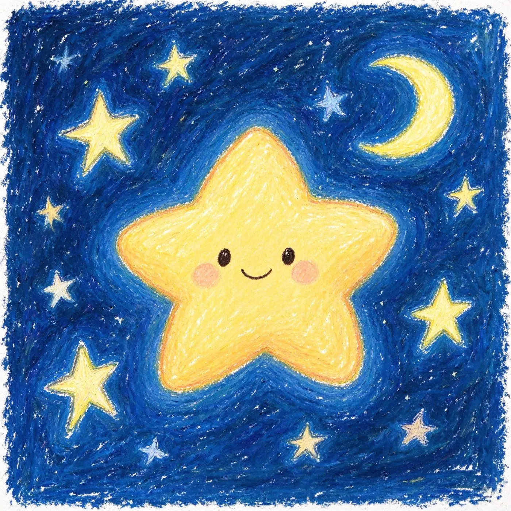
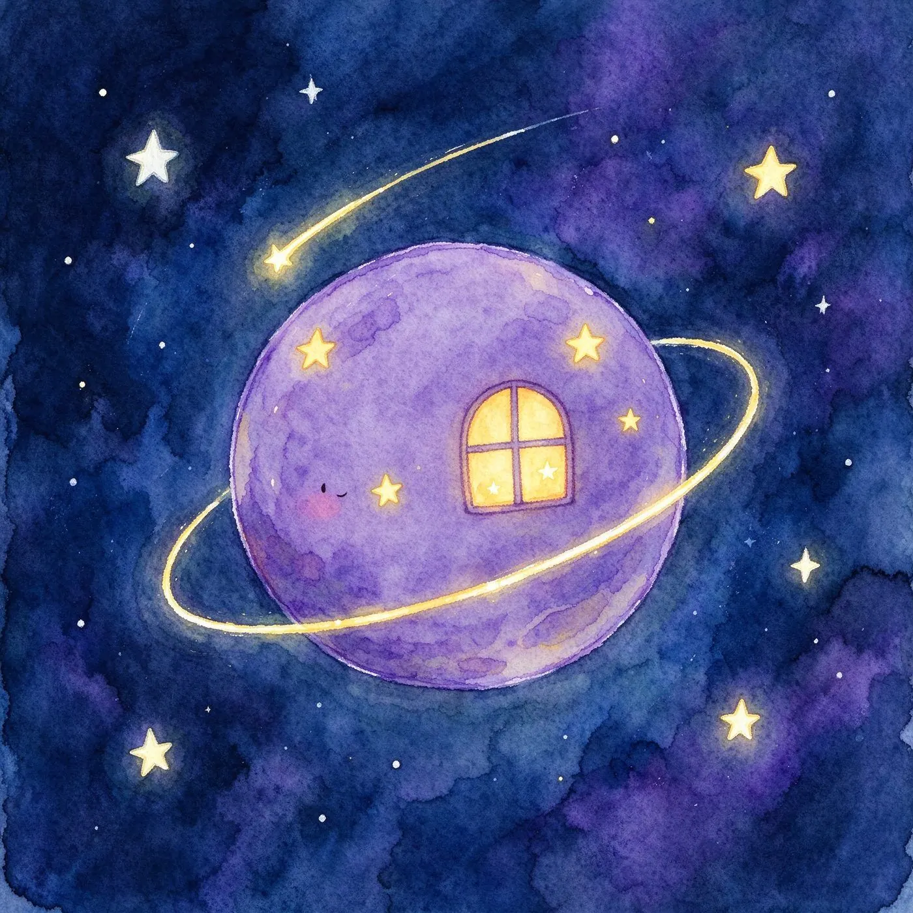

关爱自闭症儿童
每一颗星，都值得被温柔看见
序 · 小小星球
住在自己的轨道上，安静地转
有自己熟悉的光、熟悉的声音、熟悉的节奏
不回应外界的喧闹，也不习惯突如其来的拥抱
不是冷漠，也不是抗拒
只是他们的世界，说着另一套温柔的语言 我们叫他们 —— 来自星星的孩子
或许你曾与他们擦肩而过
你或许在路上遇见过他们：
地铁上的小身影
可能是在地铁上，突然捂住耳朵、不安跺脚的小朋友
画展前的小画家
可能是在画展前，反复临摹同一幅星空的小画家
安静的小孩
可能是从来不肯主动开口，喊一声“叔叔阿姨”的安静小孩
他们不是性格孤僻，也不是故意不听话
只是神经发育的天然差异
让他们在用和普通人完全不同的方式
观察这个世界，感受这个世界
多一点了解 · 少一点误解
“星星的孩子”，在医学上有一个更严谨的名字：
自闭症谱系障碍（Autism Spectrum Disorder）。
它是与生俱来的神经发育差异，不是性格问题，更不是教养的失误。
社交沟通与互动的困难：可能很少与人对视、不主动开口，也难以读懂他人的表情与情绪。
兴趣专注而狭窄：会长时间沉浸在自己热爱的事物里，反复观察、反复研究，乐此不疲。
重复刻板的行为：喜欢固定的流程与节奏，环境突然变化时，容易让他们感到不安。
每一个谱系孩子都独一无二：能力差异很大，有的需要长期支持，有的拥有超常的专注与天赋。
每年 4 月 2 日 · 世界自闭症关注日
数据来源：世界卫生组织（WHO）《自闭症》事实说明（2025）；中国残疾人联合会2024年发布数据（光明网2026年4月2日报道）；美国疾控中心（CDC）ADDM网络2023年社区报告。各机构调查口径与年份不同，数据仅供参考。
早发现 · 早干预
自闭症的早期信号，常藏在孩子一两岁时的日常细节里。
留意这些“与众不同”，可能改变孩子的未来：
不看 · 少看：6 个月后仍很少与人目光对视，叫名少有反应，仿佛“听不见”。
不语 · 少语：语言发育明显落后，或 2 岁后语言能力倒退、不再开口。
不指 · 不回应：不会用手指物表达需求，别人指向物体时不跟随看。
刻板 · 重复：反复转圈、拍手、排列物品；兴趣狭窄，对常规变化强烈不安。
如果孩子出现多项信号且持续存在，请尽早到正规医院儿童保健科、发育行为儿科或精神心理科评估——早发现、早干预，效果更好。
参考来源：中华医学会儿科学分会发育行为学组《自闭症谱系障碍儿童早期识别筛查和早期干预专家共识》；美国儿科学会（AAP）建议在 18、24 月龄常规发育筛查中关注自闭症早期信号。
藏起来的光芒
很多人不知道，这些“星星的孩子”常常藏着独一无二的天赋。
他们中的一些人，拥有惊人的专注力与记忆力：
有人能精准背出整座城市的公交线路
有人对乐器的音准，敏感得近乎苛刻
有人笔下的星空，永远有普通人画不出的绚烂颜色


就像你眼前这几幅小拼图里的画 ——
每一块色块，都是他们在向外界递出的小名片
天赋不是标签，而是他们与世界对话的方式
但他们记得，每一个温柔蹲下来的身影
如果你愿意放慢脚步
跟着他们的视线，看向同一片星空
你会发现，他们也在偷偷地看你
然后，慢慢伸出手
牵住你的善意
善意从不遥远
关爱他们，从来不是遥远的公益口号，
只是藏在这些很简单的小事里：
在公共场所看见他们情绪失控时，不投去异样的眼光
不给他们贴上“怪人”“不懂事”的标签
遇到他们的家人时，不用过度同情，平等地递出一份平常的善意
当他们迟迟没有回应时，多给一点等待的时间
当他们愿意分享自己的世界时，认真地听，认真地看
善意从来不需要惊天动地
它只是我们愿意，多理解一点点
每一个孩子，都值得被世界温柔接住 多一分包容，少一分偏见
我们就能在他们的小星球和现实世界之间
搭起一座铺满星光的桥
让他们也能从容、开心地
慢慢走完属于自己的成长路
而桥的那一头，是我们共同的、更好的世界
自闭症儿童关爱 · 公益科普
以星为灯
我们身边，生活着一群特别的孩子。
他们安静、专注、在自己的世界里发光。
请随这片星空，走近他们，也走近一份温柔的善意。
谢谢每一个，愿意为“星星的孩子”温柔驻足的你。
你的每一次包容、每一份平常的善意，
都是洒向他们小星球的一缕星光。
愿每一颗星星，都被世界温柔接住。
愿你我，都成为桥上的一盏灯，
照亮彼此前行的路。
需要倾诉或支持时，可以拨打全国心理援助热线 12356，24 小时有人倾听。
内容与数据来源：世界卫生组织（WHO）2025、中国残联 2024、美国疾控中心（CDC）2023 等权威公开资料；本站为公益科普作品，内容不构成医疗诊断或干预建议，请以正规医疗机构专业意见为准。
以星为灯 · 照亮来自星星的孩子 —— 公益科普互动页
朗读会自动跳过括号注释、表情与链接，并按句分段、句间留白，尽量贴近真人说话；点回复下方的 🔊 可听单条。想换男声，在上方音色里选「温润男声」或「低沉男声」。
· 后端中转（推荐上线部署）：把 others/serverless/vercel-api-ai.js 复制成站点根目录的 api/ai.js，与页面同域部署后选此项——真实 Key 只存服务端，前端零泄露；纯静态托管（GitHub Pages 等）没有 /api/ai，选它会 404 并自动降级；
· DeepSeek：到 platform.deepseek.com 获取 Key，模型 deepseek-chat；
· 智谱 GLM：到 open.bigmodel.cn 获取 Key，模型 glm-4-flash（含免费额度）；
· 通义千问：到 dashscope.console.aliyun.com 获取 Key，模型 qwen-turbo。
图片理解（多模态）：点对话框 📷 发送图片即可让 AI 看图解读；智谱自动切换 glm-4v-flash，通义自动切换 qwen3-vl-plus（DeepSeek 暂不支持）。
对话能力：支持流式逐字输出、上下文记忆（最多约 20 轮，刷新不丢失）、AI 自主调用站内工具（板块跳转 / 知识库检索 / 感官体验模拟）；点「清空对话记忆」可开启新话题。
内容依据 WHO、美国儿科学会、中国残联康复救助政策等公开资料整理，仅供家庭参考，不构成诊断或治疗建议；涉及自伤、走失、受虐待请立即就医或报警。
快捷键 Shift + L 可随时切换动态效果 · 所有设置仅保存在本机浏览器，不会上传